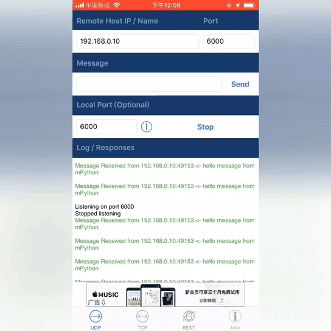

套接字-UDP
UDP协议简介
UDP（User Datagram Protocol，用户数据报协议）是一种无连接、不可靠、基于数据报的传输层通信协议。
UDP的通信过程与TCP相比较更为简单，不需要复制的三次握手与四次挥手，体现了无连接。 所以UDP传输速度比TCP快，但容易丟包、数据到达顺序无保证、缺乏拥塞控制、秉承尽最大努力交付的原则,体现了不可靠。
下图讲解服务器与客户端UDP通信連接的交互过程：

Socket UDP通讯过程
UDP编程
通常我们在说到的网络编程时默认是指TCP編程，即我们上章节说的TCP方式来通信。 socket函数创建socket对象时,不给定参数,默认为SOCK_STREAM 即socket(socket.AF_INET, socket.SOCK_STREAM)，表示为创建创建一个socket用于流式网络通信。
SOCK_STREAM 是面向连接的，即每次收发数据之前必须通过 connect 创建连接，也是双向的，即任何一方都可以收发数据，协议本身提供了一些保障机制保证它是可靠的、有序的，即每个包按照发送的顺序到达接收方。
SOCK_DGRAM 是User Datagram Protocol协议的网络通信，它是无连接的，不可靠的，因为通讯双方发送数据后不知道对方是否已经收到数据，是否正常收到数据。
任何一方socket以后就可以用 sendto 发送数据，也可以用 recvfrom 接收数据。根本不关心对方是否存在，是否发送了数据。它的特点是通讯速度比较快。大家都知道TCP是要经过三次握手的，而UDP沒有。
UDP客户端
UDP编程的客户端一般步骤是：
创建一个UDP的socket，用函数socket(socket.AF_INET, socket.SOCK_DGRAM)
设置socket属性，用函数
setsockopt()可选绑定IP地址、端口等信息到socket上，用函数
bind()可选设置对方的IP地址和端口等属性
发送数据，用函数
sendto()关闭网络连接
UDP客户端的示例:
1from mpython import *
2import socket
3
4mywifi=wifi() # 创建wifi对象
5mywifi.connectWiFi("ssid","password") # 连接网络
6dst = ("192.168.0.3", 6000) # 目的ip地址和端口号
7
8# 捕获异常，如果在"try" 代码块中意外中断，则停止关闭套接字
9try:
10 s = socket.socket(socket.AF_INET, socket.SOCK_DGRAM) # 创建UDP的套接字
11 s.setsockopt(socket.SOL_SOCKET,socket.SO_REUSEADDR,1) # 设置套接字属性
12
13 while True:
14 s.sendto(b'hello message from mPython\r\n',dst) # 发送数据发送至目的ip
15 sleep(2)
16
17# 当捕获异常,关闭套接字、网络
18except:
19 if (s):
20 s.close()
21 mywifi.disconnectWiFi()

UDP服务端
UDP編程的服务器端一般步骤是：
创建一个UDP的socket，用函数socket(socket.AF_INET, socket.SOCK_DGRAM)
设置socket属性，用函数
setsockopt()可选绑定IP地址、端口等信息到socket上，用函数
bind()循环接收数据，用函数
recvfrom()关闭连接
1from mpython import *
2import socket
3
4mywifi=wifi() # 创建wifi对象
5mywifi.connectWiFi("ssid","password") # 连接网络
6
7# 捕获异常，如果在"try" 代码块中意外中断，则停止关闭套接字
8try:
9 s = socket.socket(socket.AF_INET, socket.SOCK_DGRAM) # 创建UDP的套接字
10 s.setsockopt(socket.SOL_SOCKET,socket.SO_REUSEADDR,1) # 设置套接字属性
11 ip=mywifi.sta.ifconfig()[0] # 获取本机ip地址
12 s.bind((ip,6000)) # 绑定ip和端口号
13 print('waiting...')
14 oled.DispChar("%s:6000" %ip,0,0)
15 oled.show()
16 while True:
17 data,addr=s.recvfrom(1024) # 接收对方发送过来的数据,读取字节设为1024字节,返回(data,addr)二元组
18 print('received:',data,'from',addr) # 打印接收到数据
19 oled.fill(0) # 清屏
20 oled.DispChar("%s" %data.decode(),0,15) # oled显示接收内容
21 oled.DispChar("from%s" %addr[0],0,31)
22 oled.show()
23
24
25# 当捕获异常,关闭套接字、网络
26except:
27 if (s):
28 s.close()
29 mywifi.disconnectWiFi()
备注
recvfrom() 函数的返回值是二元組 (bytes, address)，其中 bytes 是接收到的字节数据，address 是发送方的IP地址于端口号，
用二元組 (host, port) 表示。注意，recv() 函數的返回值只有bytes数据。UDP,在每次发送 sendto() 和接收数据 recvfrom 时均需要指定地址信息于TCP编程不同,不需要调用 listen() 和 accept() 。
注意
上例,使用``connectWiFi()`` 连接同个路由器wifi。你也可以用 enable_APWiFi() 开启AP模式,自建wifi网络让其他设备接入进来。这样就无需依赖其他路由器wifi网络。